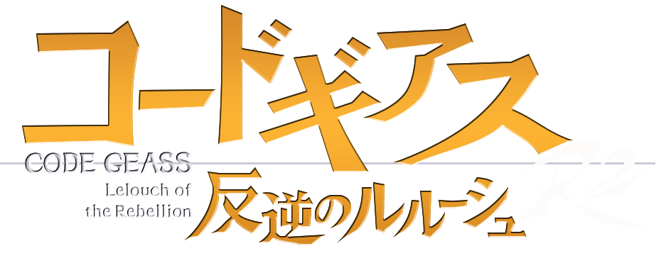
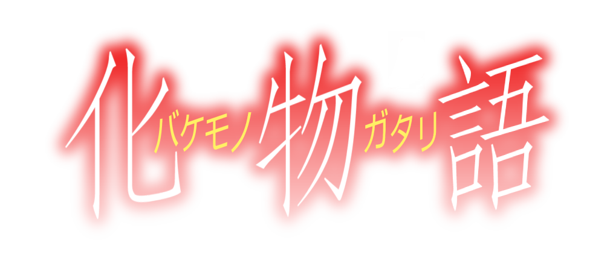

People say "Peoples taste in anime is up to them, there is no best anime of all time!", well guess what?
MAL(MyAnimeList)says otherwise! Were taking the top 2 anime from 2006-2011 to give you the most accurate top 10 anime from
the golden age!If you're a beginner or regular anime fan but want some good ol' anime to watch that aren't 12 episodes
and 2 OVA's long. Heres a detailed list to help you!
1.Death note:
Brutal murders, petty thefts, and senseless violence pollute the human world. In contrast, the realm of death gods is a humdrum, unchanging gambling den. The ingenious 17-year-old Japanese student Light Yagami and sadistic god of death Ryuk share one belief: their worlds are rotten.
For his own amusement, Ryuk drops his "Death Note" into the human world. Light stumbles upon it, deeming the first of its rules ridiculous: the human whose name is written in this note shall die. However, the temptation is too great, and Light experiments by writing a felon's name, which disturbingly enacts his first murder.
Aware of the terrifying godlike power that has fallen into his hands, Light—under the alias "Kira"—follows his wicked sense of justice with the ultimate goal of cleansing the world of all evil-doers. The meticulous mastermind detective L is already on his trail, but as Light's brilliance rivals L's, the grand chase for Kira turns into an intense battle of wits that can only end when one of them is dead. [Took from MAL]

2. Code GEASS: Lelouch of the Rebellion:
In the year 2010, the Holy Empire of Britannia is establishing itself as a dominant military nation, starting with the conquest of Japan. Renamed to Area 11 after its swift defeat, Japan has seen significant resistance against these tyrants in an attempt to regain independence.
Lelouch Lamperouge, a Britannian student, unfortunately finds himself caught in a crossfire between the Britannian and the Area 11 rebel armed forces. He is able to escape, however, thanks to the timely appearance of a mysterious girl named C.C., who bestows upon him Geass, the "Power of Kings." Realizing the vast potential of his newfound "power of absolute obedience," Lelouch embarks upon a perilous journey as the masked vigilante known as Zero, leading a merciless onslaught against Britannia in order to get revenge once and for all.
3. Lucky Star
Lucky☆Star follows the daily lives of four cute high school girls—Konata Izumi, the lazy otaku; the Hiiragi twins, Tsukasa and Kagami (sugar and spice, respectively); and the smart and well-mannered Miyuki Takara.
As they go about their lives at school and beyond, they develop their eccentric and lively friendship and making humorous observations about the world around them. Be it Japanese tradition, the intricacies of otaku culture, academics, or the correct way of preparing and eating various foods—no subject is safe from their musings.
4. Clannad
Tomoya Okazaki is a delinquent who finds life dull and believes he'll never amount to anything. Along with his friend Youhei Sunohara, he skips school and plans to waste his high school days away.
One day while walking to school, Tomoya passes a young girl muttering quietly to herself. Without warning she exclaims "Anpan!" (a popular Japanese food) which catches Tomoya's attention. He soon discovers the girl's name is Nagisa Furukawa and that she exclaims things she likes in order to motivate herself. Nagisa claims they are now friends, but Tomoya walks away passing the encounter off as nothing.
However, Tomoya finds he is noticing Nagisa more and more around school. Eventually he concedes and befriends her. Tomoya learns Nagisa has been held back a year due to a severe illness and that her dream is to revive the school's drama club. Claiming he has nothing better to do, he decides to help her achieve this goal along with the help of four other girls.
As Tomoya spends more time with the girls, he learns more about them and their problems. As he attempts to help each girl overcome her respective obstacle, he begins to realize life isn't as dull as he once thought.
5. Black Butler
Young Ciel Phantomhive is known as "the Queen's Guard Dog," taking care of the many unsettling events that occur in Victorian England for Her Majesty. Aided by Sebastian Michaelis, his loyal butler with seemingly inhuman abilities, Ciel uses whatever means necessary to get the job done. But is there more to this black-clad butler than meets the eye?
In Ciel's past lies a secret tragedy that enveloped him in perennial darkness—during one of his bleakest moments, he formed a contract with Sebastian, a demon, bargaining his soul in exchange for vengeance upon those who wronged him. Today, not only is Sebastian one hell of a butler, but he is also the perfect servant to carry out his master's orders—all the while anticipating the delicious meal he will eventually make of Ciel's soul. As the two work to unravel the mystery behind Ciel's chain of misfortunes, a bond forms between them that neither heaven nor hell can tear apart.
6. Soul Eater
Death City is home to the famous Death Weapon Meister Academy, a technical academy headed by the Shinigami—Lord Death himself. Its mission: to raise "Death Scythes" for the Shinigami to wield against the many evils of their fantastical world. These Death Scythes, however, are not made from physical weapons; rather, they are born from human hybrids who have the ability to transform their bodies into Demon Weapons, and only after they have consumed the souls of 99 evil beings and one witch's soul.
Soul Eater Evans, a Demon Scythe who only seems to care about what's cool, aims to become a Death Scythe with the help of his straight-laced wielder, or meister, Maka Albarn. The contrasting duo work and study alongside the hot headed Black☆Star and his caring weapon Tsubaki, as well as the Shinigami's own son, Death the Kid, an obsessive-compulsive dual wielder of twin pistols Patty and Liz.
Soul Eater follows these students of Shibusen as they take on missions to collect souls and protect the city from the world's threats while working together under the snickering sun to become sounder in mind, body, and soul.

7. Bakemonogatari
Koyomi Araragi, a third-year high school student, manages to survive a vampire attack with the help of Meme Oshino, a strange man residing in an abandoned building. Though being saved from vampirism and now a human again, several side effects such as superhuman healing abilities and enhanced vision still remain. Regardless, Araragi tries to live the life of a normal student, with the help of his friend and the class president, Tsubasa Hanekawa.
When fellow classmate Hitagi Senjougahara falls down the stairs and is caught by Araragi, the boy realizes that the girl is unnaturally weightless. Despite Senjougahara's protests, Araragi insists he help her, deciding to enlist the aid of Oshino, the very man who had once helped him with his own predicament.
Through several tales involving demons and gods, Bakemonogatari follows Araragi as he attempts to help those who suffer from supernatural maladies.